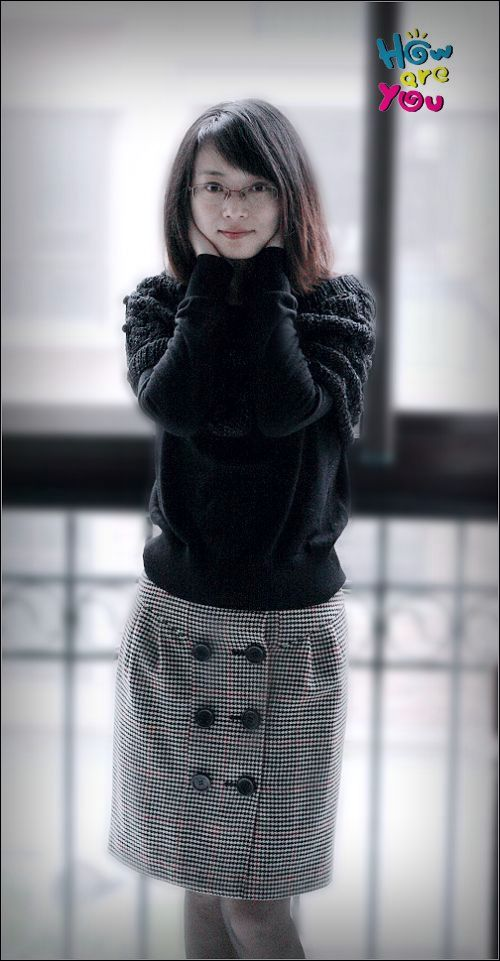

我们习惯打一份体面的“工”，找一个门当户对的爱人，过一种“家-地铁-公司”三点一线的生活。偶尔有一点点不甘心，左顾右盼，但叛逆的力量太小了，口中尚要抱怨几句，而双脚，始终如一地踏在“回家的路上”。
美国有个叫Christopher McCandless的年轻人。从名校毕业，放弃了优渥的工作，把自己在银行里的2.4万美圆悉数捐给慈善机构。他自己，就背着一包米，一本小说，一张破旧的地图，一枝猎枪，徒步进入阿拉斯加的荒蛮之地。这个真实的故事被肖恩.潘拍成了电影《荒野生存》。且不论最终的结局，他毕竟是冒了天下之大不韪，选择完全听从自己的心，堂堂地走在了“离开的路上”。
无论走在“回家的路上”，抑或走在“离开的路上”，都是值得被祝福的选择。只是那些总在十字路口问自己问别人“走，还是不走”的人；那些被车水马龙席卷着跌跌撞撞向前的人；那些越来越容易暴躁，越来越享受不到过程之愉悦的人，究竟是本着自己的初衷而去？还是在随波逐流呢？人生是可以随心所欲的，那不是挥霍；时间，是该“浪费”在一切自己所钟爱的人事物上。但不该随波逐流，这才叫挥霍。时间，无端地流逝掉，激不起丝毫涟漪留不下任何回忆。
奈良智美曾经在个人画展的墙壁上，贴满字条，上面写着：“我不想忘记初衷，不想让初衷只是形式的东西。即使全部崩坏了，也想要依附在那个时候那个心情旁边。”无论如何，别在途中轻易地将自己的初衷弄丢才好。(作者：施雯)
风尚词汇：Soit aller,soit rester
以往传统观念里的法国人，个个懂得享受生活，爱度假爱罢工，坚持自己的初衷，用自己喜欢的节奏过好每一天。现如今的法国人也被激烈的竞争逼成了“急性子”，尤其在开车的时候，一旦遇到前面人开得慢，挡了他的道，便火冒三丈。动不动就把这句话挂在嘴边：“Soit aller,soit rester”，即拼命地按喇叭，问：“你走还是不走啦！”
大多日志不是以天气开始，就是以天气结束，千篇一律。
今天，阴有阵雨，气温8-11度？
在复制的每一天里，我们当然要走，只是好象已经忘记了自己的初衷......


12 Responses to “走还是不走，莫改初衷。”
2009-03-27
每套服饰都让人眼前一亮！啊哦
2009-03-27
用自己喜欢的节奏过好每一天
这几天真好，每天都是视觉大餐，饕餮盛宴
2009-03-27
过自己想要的生活才是最幸福的 ！过程虽然美好也很重要，没有结果的过程在美好，也是不完美的！！上帝祝福你！
2009-03-27
美啊~~
2009-03-27
美呀，天……
2009-03-27
这是一个可以把人从慢性子逼成急性子的世界，好在我没有忘记自己的初衷，才能够暂时坚持下去。还是忍不住赞美一下，这一套很淑女很日系哦。
2009-03-27
好美呀，看起来好像二十几岁的年龄。
2009-03-27
对，脸上有少女的神情，衣服搭配的很好看。
忙碌的生活让人失去判断力，走还是不走，真的有我们说了算吗，时代给了我们太多选择，反而没了选择。呵呵。
2009-03-27
平时运动吗，经常看你为自己做一大桌菜，难道都被狗狗吃了吗？身材还是这么好：—）
2009-03-28
烧一次菜可以吃两三顿呢，不上班就可以少烧几个菜了。体型和遗传有关，有口福啊，怎么吃都胖不到哪儿去。最近都没运动，下班在家休养读书。除了保持好心情，还要多爱自己，对生活保有积极的态度，这是现在努力的方向，其它的听天由命吧！
2009-03-28
这一身真漂亮，这么多年怎么都不变老呢，妖精了都（褒义咯*_*）
2009-03-29
哈哈~以前有个同事在办公室里大声对我说：“某某人成妖精啦，不见老啊？”
Leave A Reply
存档只读，评论已关闭。